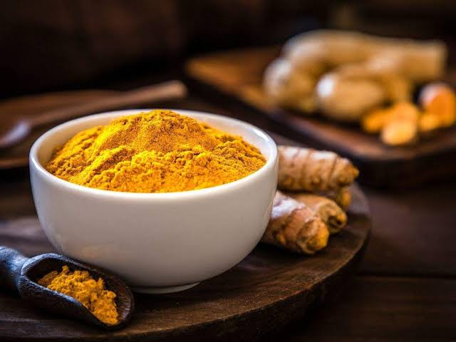

Turmeric
−
1
+
Turmeric powder - Rs.80/kg
Support our locals who are working on the agricultural fields throughout day and night to protect our natural foods and herbs. Buy now.
Product Description
Testimonials
The use of turmeric dates back nearly 4000 years to the Vedic culture in India, where it was used as a culinary spice and had some religious significance. It probably reached China by 700ad, East Africa by 800ad, West Africa by 1200ad, and Jamaica in the eighteenth century. In 1280, Marco Polo described this spice, marveling at a vegetable that exhibited qualities so similar to that of saffron. According to Sanskrit medical treatises and Ayurvedic and Unani systems, turmeric has a long history of medicinal use in South Asia. Susruta’s Ayurvedic Compendium, dating back to 250bc, recommends an ointment containing turmeric to relieve the effects of poisoned food. Turmeric is used as an herbal medicine for rheumatoid arthritis, chronic anterior uveitis, conjunctivitis, skin cancer, small pox, chicken pox, wound healing, urinary tract infections, and liver ailments. It is also used for digestive disorders; to reduce flatus, jaundice, menstrual difficulties, and colic; for abdominal pain and distension; and for dyspeptic conditions including loss of appetite, postprandial feelings of fullness, and liver and gallbladder complaints. It has anti-inflammatory, choleretic, antimicrobial, and carminative actions (. The main clinical targets of turmeric are the digestive organs: in the intestine, for treatment of diseases such as familial adenomatous polyposis; in the bowels, for treatment of inflammatory bowel disease; and in the colon, for treatment of colon cancer. For arthritis, dosages of 8–60g of fresh turmeric root three times daily have been recommended.
Turmeric Milk (Golden Milk)
Golden milk may be surging in popularity today, but it’s not a new-fangled idea at all. Turmeric has roots in Ayurvedic medicine that date back nearly 4000 years, I learned after doing some digging around. It is known to reduce inflammation and promote healthy immune system function. And curcumin, the active ingredient in turmeric, has been shown to provide effective and safe mood stabilization. In India, turmeric milk (called haldi doodh in Hindi) has been enjoyed for centuries. I adopted the recipe for myself, making it into a ritual: I’d stand over the stove, pour the coconut milk into a pot and stir it until it bubbled. Then, I’d add the turmeric and honey, and then pour the steaming drink into a mug. This whole process became a relaxing part of my evenings. I even started to look forward to it. In the hour or two after drinking my turmeric and coconut milk concoction each night, I felt a sustained feeling of relaxation. My body, so tight with stress, would become loose as I moved from tension to calm. The thoughts in my mind that were frantic and uncomfortable would slow, and I found that I was able to be where I was. After a few weeks I realized I was having some surprise benefits that I associated with the golden milk. My digestion became regular and I had less bloating after eating. My skin was clearer, my eyes brighter. After 30 days of drinking golden milk, I was in a very different state of mind than I had been at the start of the month. Sure, I knew this drink could not solve my issues with panic and anxiety, but there was no question that I felt calmer and more focused. Since that time, I’ve gone through periods where I don’t drink golden milk very often, but every now and then, when I’m feeling stressed or overwhelmed, I sink right back into the routine of nightly golden milk.
Source: Click here